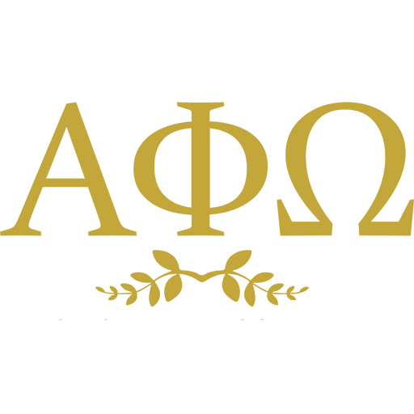
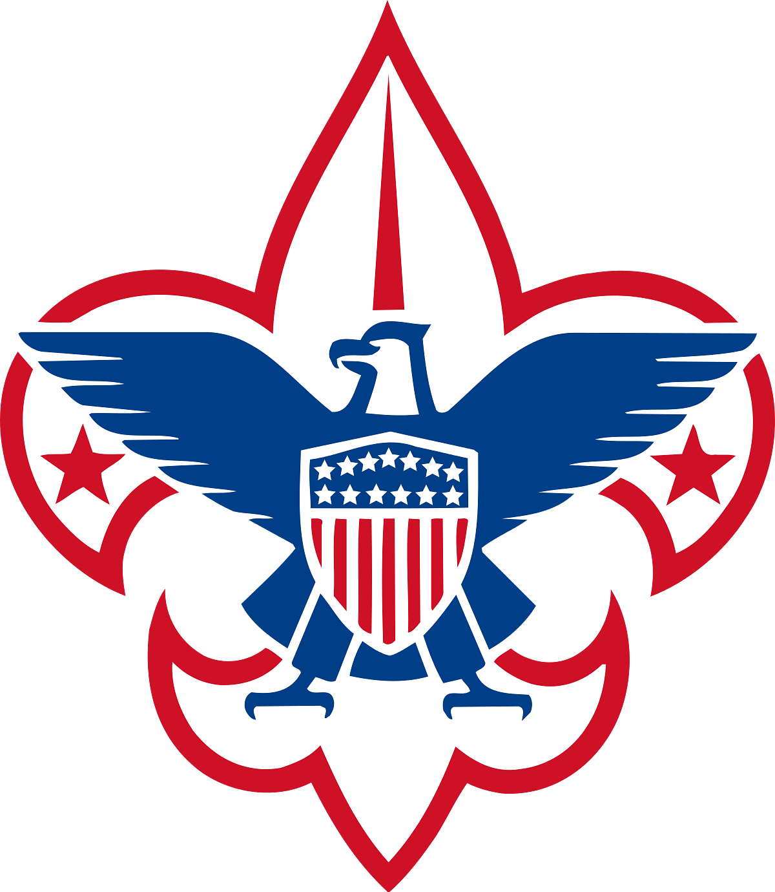

Leadership Experience
STEAM Chair
Responsible for hosting quarterly STEAM (Science, Technology, Engineering, Arts, and Mathematics) workshops for a professional business fraternity of 100+ members, including planning and executing a successful engineering workshop that introduced over 50 members to foundational technical concepts and practical applications. Additionally, organized a resume workshop that provided personalized feedback to 30+ members, resulting in improved resume quality and increased confidence in job applications.

Historian
Led the chapters multimedia and communications efforts by photographing and videographing all chapter events, organizing and executing a professional photoshoot for 23 executive committee members, and updating 70 individual member profiles to ensure consistent branding and accurate representation. These initiatives directly increased overall rush engagement by 18%. Additionally, documented weekly executive board tasks and action items to support chapter operations, improve accountability, and streamline internal communication across leadership teams.

Eagle Scout
Earned the rank of Eagle Scout, an achievement attained by approximately 6% of Scouts over an average commitment of six or more years, requiring advancement through seven ranks, completion of 21 merit badges, sustained leadership of younger Scouts, and execution of a community-benefiting Eagle project followed by a formal recommendation and review process. Over six years, dedicated an average of five hours per week across 40 weeks annually to troop leadership, mentoring, summer camps, outdoor skills instruction, and community service. Led and completed a 100+ hour Eagle project by organizing and directing fellow Scouts to design and build custom instrument storage units for my schools band program.
